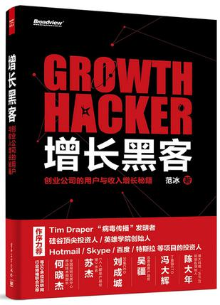

《增长黑客》

忘记在哪里看到这本书的推荐，最近正在读。
做为一只程序猿，我已经做过几款游戏了，但是在看了这本书之后，才觉得目前的项目不仅仅是工作，是任务，更应该把它当作自己的私人物品一样爱护，它是“我”的，让我跟它的联系更加紧密。
书里列举了不少产品增长的事例，让我产生深深的代入感，希望自己也能在目前的项目中有一次漂亮的实践，同时，这些方法又那么的让人信服和神奇，也许只是小小的修改，却能在数据上真实的反映出巨大的变化。
书籍目录也很实用的讲到了「用户获取」，「激发活跃」，「提高留存」，「增加收入」这几个方面。目前还没有全部看完，但是对数据的理解更加深刻了。很惭愧，之前做的几款产品，要么是自己没有权限看数据反馈，要么是自己不重视数据的作用，直到遇见这本书之前都没有这样的数据意识。今早去到公司，向产品负责人申请了数据权限之后，希望在后面的工作中，能学以致用，在数据中理清思路，把自己的产品做的更好。
回想起之前的项目，都会有接入统计这样一个流程，但是对统计出来的数据，似乎从来没有听到系统的分析并用以指导产品优化。更多的产品修改来自于策划对其他竞品的参考。我目前的项目中，还欠缺很多统计数据，刚好可以给我用来实践，自己来设计一些统计项，结合本书用数据指导后面的工作，期待惊喜，想想还是挺激动的:)